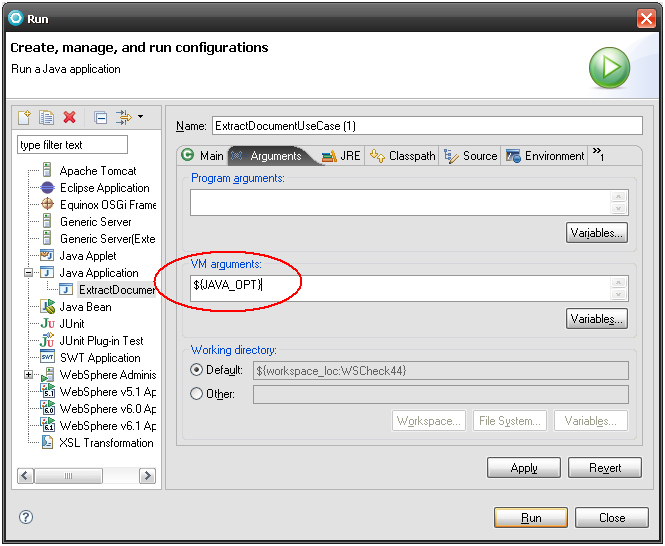

CAA Web Services References |
|
Troubleshoot the ENOVWSCntMgmtCpp CAA Web ServiceTrouble shooting ENOVWSCntMgmtCpp CAA Web Service for document management |
Abstract
This article discusses trouble shooting process while consuming the
ENOVWSCntMgmtCpp CAA Web service. More specifically crash occurred while running
the ExtractDocument Web Service.
[Top]
Problem Description
Large file size in a document extraction causes crash while running the
ExtractDocument Web Service. Crash might occur on V5 server side as well as
inside JAVA client application which user has created (Similar to provided CAA
use cases).
[Top]
Solution
Define a runtime variable restricting size of document which will be
extracted:
export WSDOC_EXT=1 ( Example - 1 mb)
Usage
The number assigned to this variable limits the size of the file in
megabytes that can be extracted using web services. For example, if it
is set to 50 then files greater than 50 MB will not be returned as
binary, and instead of a crash, a warning is returned.
In its absence or if nothing is assigned to this variable, the web
services code will attempt to extract the file irrespective of the size
of the file. Please avoid using decimal numbers.
General suggestion for Extract Document
If the introspection is turned ON while extracting a document, the
ENOVIA V5 VPM server converts CATPart into different formats which may
be installation dependent.
It is advised to turn OFF the introspection process by defining the
runtime variables:
export ENOVIA_WO_INTROSPECTION=1
export CATJWS_JAVA_OPTION="-Xmx512m"
[Top]
In case of crash with JAVA client application
With a large size document, the memory requirement needed to consume the ExtractDocument method is significantly larger than the default memory limit on Java Virtual Machine. This might lead JVM to crash (stack falling on : java.lang.OutOfMemoryError: Java heap space).
Solution
To consume this web method using a Java SOAP client,
you should define the JVM’s maximum heap size using these recommendation :
“-Xms128m –Xmx512m”. (where lower JVM heap size limit value will be of
128mb, and upper value of 512mb). In case crash still happens, user remains
free to increase those values to find appropriate JVM size limits.
Usage Example
Here is an example for the
same using IRADE7 for running our JAVA application. Once you are ready with
your JAVA application, click on Run:
You will be shown following panel:
Click on Arguments tab:
Click on variable for “VM arguments”, following panel will be shown:
Click on “Edit Variables”. Again following panel will be displayed:
Click on New button and fill details as below (You can name the variable as you want):
Click on OK for all panel displayed and you will find results as below in “Run” panel:

After above all modifications you are ready to Run your JAVA application using ExtractDocument Web Service.
[Top]
| Version: 1 [Feb 2010] | Document created |
| [Top] | |
Copyright © 1995-2010, Dassault Systèmes. All rights reserved.